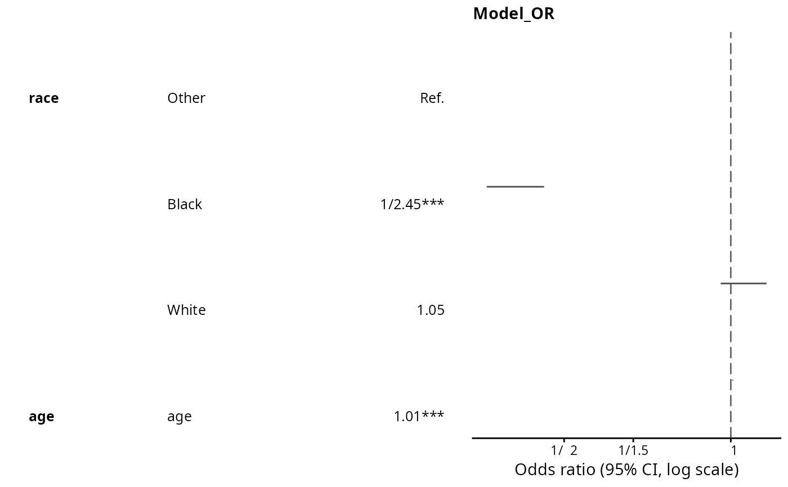

![[Experimental]](figures/lifecycle-experimental.svg)
A finalfit-style forest plot of the odds ratios in a tab_logit() / tab_reg() table: a log-scale
point-and-interval plot beside a text table of the estimates. It reads the stored fmt fields
(odds ratio, confidence interval, significance, count) directly – no model is re-fitted.
Usage
or_plot(tabs, column = NULL, point_size = c(1.5, 6), title = NULL, ...)Arguments
- tabs
A
tabxplortable fromtab_logit()/multi_logit()/tab_reg()(binomial / poisson / multinomial / ordinal – any table with an odds-ratio-shaped column).- column
Optional column name to plot when the table has several odds-ratio columns (default: the first one).
- point_size
Length-2 numeric, the
ggplot2point-size range mapped to the cell counts.- title
Optional plot title (default: the plotted column's name).
- ...
Unused, for future extension.
Examples
data <- forcats::gss_cat |>
dplyr::mutate(married = factor(dplyr::if_else(marital == "Married",
"Married", "Not married")))
if (requireNamespace("ggplot2", quietly = TRUE) &&
requireNamespace("gridExtra", quietly = TRUE)) {
or_plot(tab_logit(data, "married", c("race", "age")))
}
